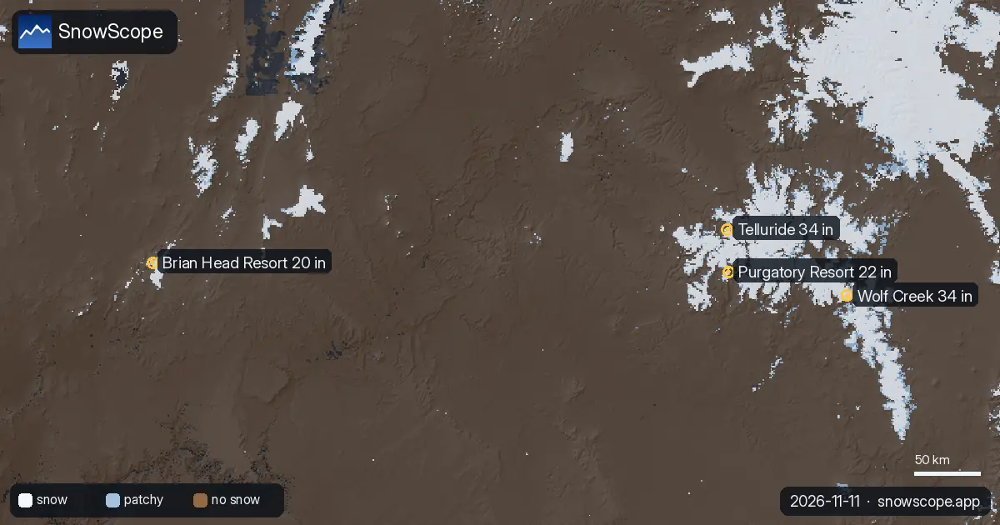

Wolf Creek en diciembre: el forfait económico con más nieve de Colorado, día a día
Wolf Creek es una estación sin lujos en lo alto de un puerto de montaña de Colorado, con una lista de precios impresa y fama de nieve abundante. Nuestro histórico confirma parte de la leyenda: entre las estaciones de Colorado que comparamos, es la que tiene el manto de nieve típico más profundo a mediados de diciembre a media montaña. También tiene un calendario de días punta que conviene conocer antes de reservar.
Consulta la previsión de nieve en tiempo real de Wolf Creek Ski Area en la app SnowScopeEspesor de nieve, alertas de nieve polvo y mapa 3D, gratis.En lo alto de la Divisoria Continental
Wolf Creek se encuentra en el Wolf Creek Pass, entre Pagosa Springs y South Fork. Según nuestro mapeo, tiene 11 remontes y unos 31 mi (50 km) de pistas, desde aproximadamente 10.260 ft (3128 m) hasta 11.760 ft (3585 m) de altitud. No hay alojamiento al pie de las pistas ni un pueblo urbanizado: se viene a esquiar y se baja de nuevo en coche.

La nieve de diciembre a tres altitudes
En un 15 de diciembre típico, en la base hay 29 in (74 cm), a media montaña, sobre los 11.010 ft (3356 m), 34 in (87 cm), y en la cima 36 in (92 cm). Para el 31 de diciembre, a media montaña se llega a 46 in (118 cm).
La fiabilidad es buena, aunque no total. El 15 de diciembre, el 72 % de los inviernos tenían 20 in (50 cm) o más a media montaña, y el porcentaje de semanas con buena nieve allí sube del 59 % en la primera semana de diciembre al 78 % en la semana de Navidad. Un diciembre flojo, uno de cada diez, solo tenía 5 in (12 cm) el día 15: cuando las tormentas fallan a los San Juan, fallan del todo.

El calendario de precios
Wolf Creek publica sus precios de 2026-2027: el forfait de día completo para adultos cuesta 96 $ los días normales y 110 $ los días punta. En diciembre, los días punta van del 20 al 23 de diciembre y del 26 al 31 de diciembre.
También se detallan los forfaits de varios días consecutivos: 2 días por 192 $ en fechas normales o 220 $ en fechas punta, 3 días por 285 $ o 327 $. El diciembre barato es, por tanto, todo lo anterior al 20 de diciembre, además de la Nochebuena y el día de Navidad en sí, que no están en la lista de días punta.
Frente a Loveland y Ski Cooper
Loveland, en la I-70 al oeste de Denver, vende online forfaits de inicio de temporada a 60 $ hasta el 13 de diciembre, y luego cobra 159 $ en taquilla desde el 14 de diciembre. Su media montaña tenía 29 in (74 cm) en un 15 de diciembre típico, con el 67 % de los inviernos por encima de 20 in.
Ski Cooper, cerca de Leadville, es la opción barata entre semana a 49 $, 99 $ los fines de semana y festivos, con 26 in (66 cm) a media montaña en un 15 de diciembre típico y el 70 % de los inviernos por encima de 20 in. Según nuestros datos, Wolf Creek es la que tiene más nieve de las tres, a precio fijo.
La parte honesta
El inicio de temporada aquí solía ser más nevado. En los primeros 15 inviernos de nuestro histórico, a media montaña había 55 in (140 cm) en un 15 de diciembre típico; en los últimos 15 inviernos, 24 in (60 cm), con el porcentaje por encima de 20 in bajando del 87 % al 67 %. El invierno pasado hubo solo 9 in (23 cm) en esa fecha. Aun así, Wolf Creek sigue siendo una buena apuesta para diciembre, sobre todo a partir de mediados de mes.
Consejos para esquiadores
- Esquía antes del 20 de diciembre para mantenerte en el precio normal de 96 $.
- Reserva dos o tres días consecutivos para un precio multi-día más bajo.
- El Wolf Creek Pass (US-160) es alto y empinado: lleva cadenas y consulta el CDOT antes de conducir.
- Por encima de los 10.000 ft, bebe agua y tómate con calma el primer día.
Referencias y créditos
- Wolf Creek Ski Area, tickets and passes 2026-2027 (official) wolfcreekski.com/tickets-passes/
- Loveland Ski Area, lift tickets 2026-27 (official) skiloveland.com/lift-tickets/
- Ski Cooper, day pass 2026-27 (official) www.skicooper.com/cooper-day-pass/
- OpenSkiMap (mapped lifts and runs) openskimap.org/
- avalanche.org, US avalanche centers and forecasts avalanche.org/
Sobre estas cifras
Cifras de nieve: histórico de nieve de SnowScope, 46 inviernos pasados (1980-81 a 2025-26) en las alturas indicadas (base, media, cima), una reconstrucción de la nieve pasada para una zona corregida por altitud (basada en ERA5-Land; Snow_Hydro 1 km para Marruecos), no los partes de la estación. Nieve actual: el mapa de SnowScope. Remontes, pistas y alturas: cartografía OpenSkiMap. Precios: las páginas oficiales listadas abajo, consultadas el 13 de noviembre de 2026; los precios dinámicos cambian con la fecha y la demanda.
Boletines oficiales de aludes: Colorado Avalanche Information Center
Citar este informe
Para investigación, docencia o prensa: cifras y gráficos reutilizables libremente bajo CC BY 4.0 con esta cita.
SnowScope (2026), Wolf Creek en diciembre: el forfait económico con más nieve de Colorado, día a día, https://snowscope.app/blog/es/2026/11/wolf-creek-colorado-december-skiing-value.html, consultado el 2026-11-14
SnowScope (Atlas Labs). (2026, November 14). Wolf Creek en diciembre: el forfait económico con más nieve de Colorado, día a día. SnowScope snow reports. https://snowscope.app/blog/es/2026/11/wolf-creek-colorado-december-skiing-value.html
BibTeX
@misc{snowscope2026wolfcreekcoloradodecembe,
author = {{SnowScope (Atlas Labs)}},
title = {Wolf Creek en diciembre: el forfait económico con más nieve de Colorado, día a día},
year = {2026},
month = nov,
howpublished = {\url{https://snowscope.app/blog/es/2026/11/wolf-creek-colorado-december-skiing-value.html}},
note = {Published 2026-11-14 16:17 UTC; accessed 2026-11-14}
}· CC BY 4.0 · Métodos, datos y herramientas →
Sigue Wolf Creek Ski Area
Gratis: un aviso cuando llega la nieve y la previsión cada mañana.
Más partes de nieve

¿Dónde ir a esquiar en el oeste de EE. UU.? Tres datos, una lista corta: el espesor de nieve de hoy, la nieve nueva de las últimas 72 horas y la …

39 in (99 cm) en la parte alta: por eso Telluride encabeza nuestra lista. Espesor de hoy, nieve nueva de las últimas 72 horas, previsión: juntos dan …

En los próximos días la isoterma de 0 °C en el oeste de EE. UU. debería moverse entre 8333 ft (2540 m) y 13.780 ft (4200 m), según nuestra previsión. …